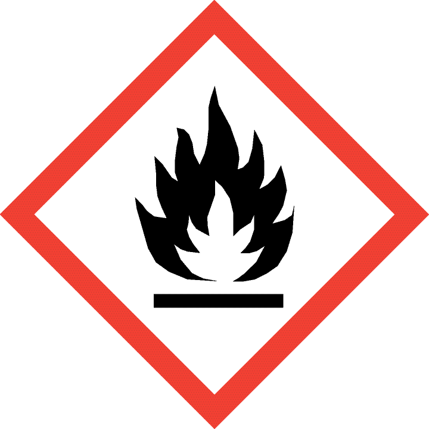
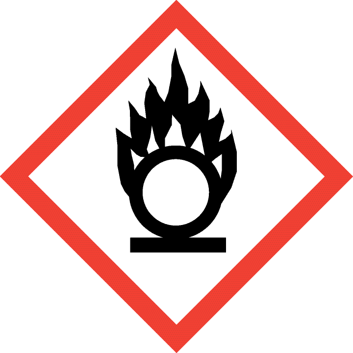
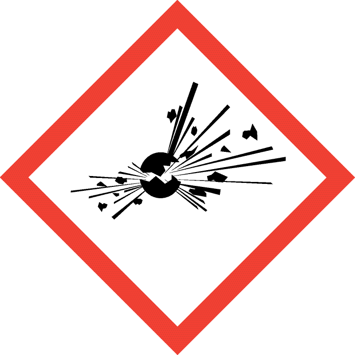
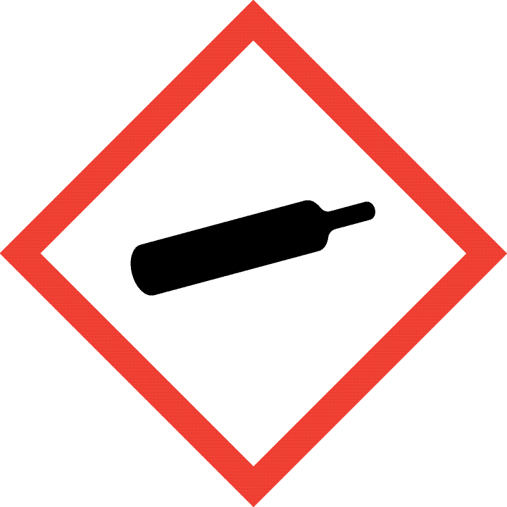
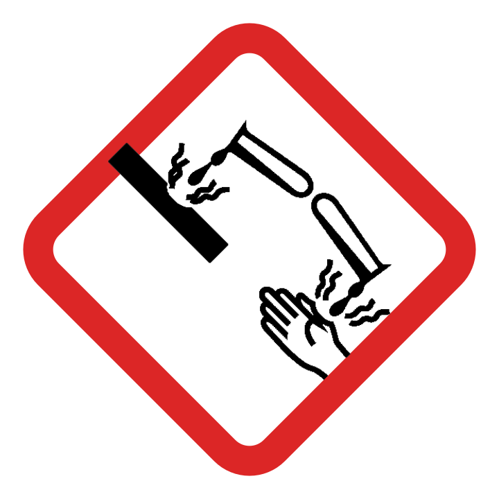
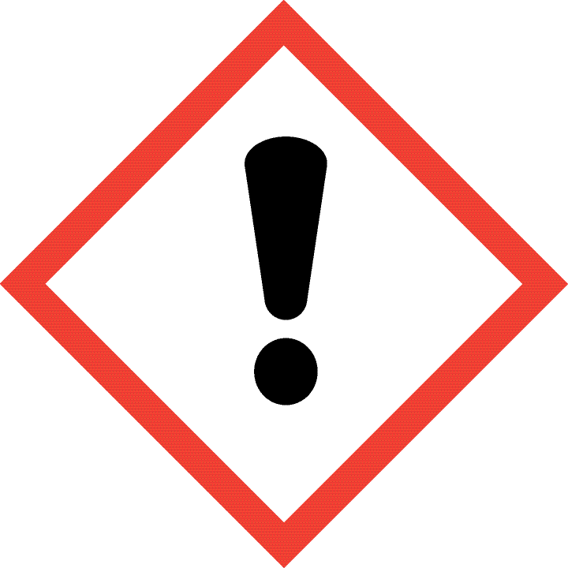
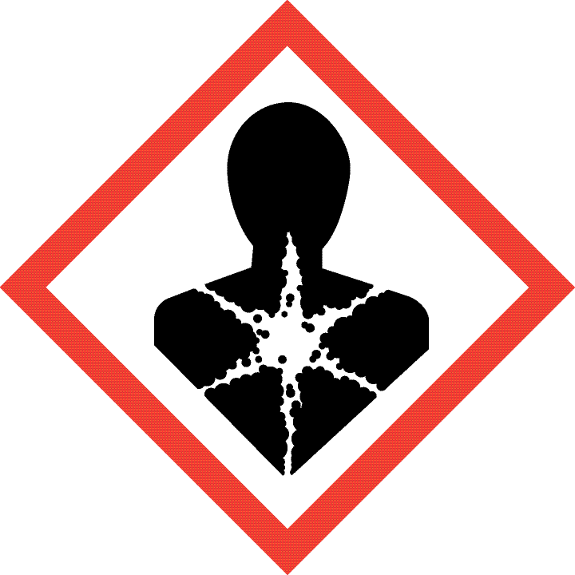
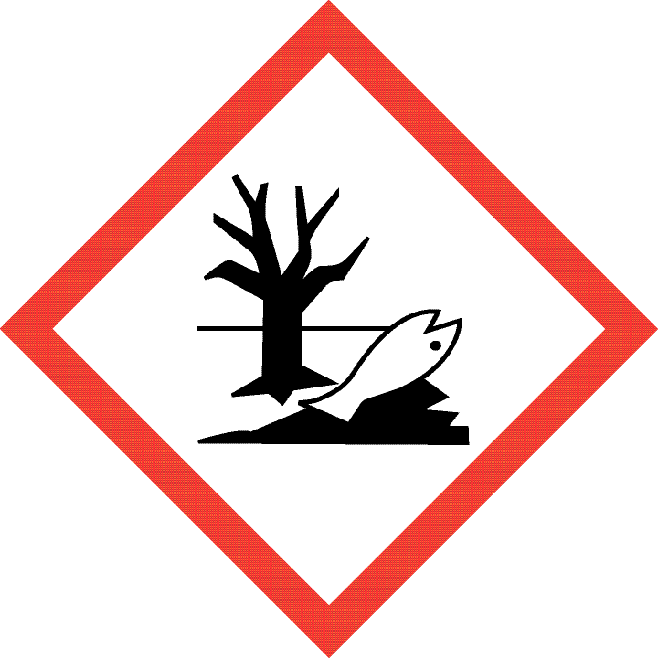

Bu ders defteri, AtomLab 9 dijital uygulamasıyla birlikte, sınıfta ya da evde kullanılmak üzere tasarlanmıştır. Her ünite aynı dört aşamayı izler — tıpkı uygulamadaki gibi:
| Aşama | Bu defterde karşılığı |
|---|---|
| 🔍 Merak Et | Konu anlatımının giriş paragrafı, günlük hayattan bir soruyla başlar. |
| 🧪 Keşfet | "Uygulamada Dene" kutusu — uygulamadaki etkinliği yaparken doldurulur. |
| 📘 Açıklayalım | Konu Anlatımı, Kavram/Örnek Çözüm kutuları ve Bu Ünitenin Kavramları. |
| 🎯 Değerlendir | Sürekli numaralanmış Açık Uçlu, Çoktan Seçmeli ve Bağlam Temelli Sorular. |
SORU TÜRLERİ HAKKINDA
AÇIK UÇLU sorularda kendi cümlelerinle, gerekçeli bir açıklama yazman istenir; cevap satırlarına yaz. ÇOKTAN SEÇMELİ sorularda 5 seçenek (A–E) bulunur. BAĞLAM TEMELLİ sorular bir okuma parçasıyla (bağlamla) başlar ve o bağlamla ilgili birkaç alt soru içerir; doğru cevaba ulaşmak için parçayı dikkatle okuyup derste öğrendiğin kavramı o duruma uygulaman gerekir — cevap parçanın içinde doğrudan yazmaz.
Her ünitenin sonunda çözdüğün soruları, kitabın en sonundaki Cevap Anahtarı ile kontrol edebilirsin.
Öğretmene not: Defter, siyah-beyaz fotokopi/baskıda da okunaklı olacak şekilde tasarlanmıştır. Sayfa içindeki kutular (kavram, uygulama, notlarım, örnek çözüm, bağlam) çerçeve stiliyle ve etiket simgesiyle birbirinden ayrılır, yalnızca renge dayanmaz.
Ad Soyad: _________________________________________ Sınıf / No: _______________
Sabah yüzünü yıkamandan akşam telefonunu şarj etmene kadar geçen her an, aslında görünmez bir kimya laboratuvarındasın. El ve yüz temizlemede kullanılan su ve sabun, hastalıklarla mücadelede kullanılan ilaçlar, bilgisayardaki silisyum çipi, günümüzde önemli bir sorun hâline gelen plastik atıkların giderilmesi — bu örneklerin tamamı kimyasal maddeleri ve olayları içerir. Kimya bilimi; temizlik, ilaç, gıda, enerji ve tarım gibi pek çok sektörü etkiler ve insanların maddeleri nasıl etkileşime geçirebileceğini, bu süreçlerin günlük hayatta nasıl uygulanabileceğini anlamalarına yardımcı olur.
Bilgisayarların işlemesi, telefonların şarj olması ve televizyon ekranlarının ışıldaması gibi olaylar, atomun yapısındaki elektronların hareketine dayanır — bu defterin ikinci bölümünde (Ünite 5-8) tam olarak bu atom yapısını inceleyeceksin. Kimya bilgisi, doğada hayatta kalma becerilerini bile güçlendirir: kolonya, aseton veya yağ gibi maddeler yanıcı özellikleri sayesinde ateş yakmakta kullanılabilir; çakıl-kum-kömür katmanlarından geçirilen su, fiziksel bir süzme işlemiyle temizlenebilir.
1) Sınıflandırma Etkinliği — AtomLab 9'un 1. modülünde "Kimyasal Maddeleri Kullanım Alanına Göre Grupla" etkinliğini tamamla (en az 15 madde). Sonra uygulamada geçmeyen, kendi hayatından iki örnek daha bul ve doğru kategoriyi yaz.
| Madde (kendi örneğin) | Kullanım Alanı (temizlik / ilaç / gıda / enerji / tarım) |
|---|---|
2) pH Laboratuvarı Etkinliği — Her maddeye tıklamadan önce pH'ını tahmin et; sonra uygulamadan okuduğun değeri, asit/baz/nötr sınıfını ve "Eklenen Su"yu 5 birime getirdiğinde okunan yeni pH'ı tabloya yaz.
| Madde | Tahminim (pH) | Uygulama (pH) | Asit / Baz / Nötr | 5 birim su sonrası pH |
|---|---|---|---|---|
| Limon Tuzu | ||||
| Sirke | ||||
| Gazlı İçecek | ||||
| Diş Macunu | ||||
| Karbonat | ||||
| Sıvı Sabun | ||||
| Antiasit Tablet | ||||
| Çamaşır Suyu | ||||
| Lavabo Açıcı |
Bulgu: Tabloyu incele — su eklemek pH'ı hep aynı yöne mi götürüyor, yoksa maddenin asit/baz olmasına göre mi değişiyor? Gözlemini bir cümlede yaz: ______________________________________________
Doğada kamp yapan bir grup, yanlarında kibrit ya da çakmak bulunmadığını fark ediyor; ancak çantalarında kolonya, bir miktar bitkisel yağ ve pamuklu bir bez bulunuyor. Grup, kolonyayı bezin üzerine dökerek ve bir taşla kıvılcım çıkararak ateş yakmayı başarıyor; ateşin uzun süre yanmasını sağlamak için de üzerine az miktarda yağ ekliyorlar.
Kimya, gündelik yaşamın her alanında etkilidir; besin maddelerinden tarımda kullanılan gübrelere, çamaşır deterjanlarından şampuanlara kadar birçok ürün kimyanın etkisi altındadır. Bu geniş kapsamlı bilim dalı altı ana alt disipline ayrılır: maddelerin bileşenlerini ve miktarlarını belirleyen analitik kimya (nitel/nicel analiz), canlı organizmalardaki tepkimeleri inceleyen biyokimya, karbon bileşiklerini inceleyen (ve bileşik çeşitliliği nedeniyle kimyanın en geniş alanı olan) organik kimya, karbon içermeyen bileşikleri (asit, baz, tuz, metal, mineral) inceleyen anorganik kimya, kimyasal sistemlerin fiziksel faktörlere (sıcaklık, basınç, derişim) bağlı davranışını ve enerji dönüşümlerini inceleyen fizikokimya, ve büyük moleküllerin (makromoleküllerin) kimyasını inceleyen polimer kimyası.
Bu disiplinler birbirinden kopuk değildir; gerçek bir problem çoğu zaman birden fazla disiplinin bir arada kullanılmasını gerektirir. Örneğin yeni bir ilaç geliştirmek hem organik kimya (molekülün sentezi), hem biyokimya (vücuttaki etkisi), hem de analitik kimya (saflık ve doz kontrolü) bilgisini aynı anda kullanır.
Uygulamada altı disiplin kartını çevirerek incele, sonra "Örneği Doğru Disipline Eşleştir" etkinliğini tamamla. Her disiplin için uygulamada gördüğün bir örneği ve kendi bulduğun yeni bir örneği tabloya yaz.
| Disiplin | Uygulamadaki Bir Örnek | Kendi Bulduğun Örnek |
|---|---|---|
| Analitik Kimya | ||
| Biyokimya | ||
| Organik Kimya | ||
| Anorganik Kimya | ||
| Fizikokimya | ||
| Polimer Kimyası |
Bir araştırma ekibi, doğada kısa sürede parçalanabilen, büyük moleküllerden oluşan yeni bir ambalaj malzemesi geliştiriyor. Malzeme piyasaya sürülmeden önce, malzemenin bozunma sırasında açığa çıkardığı bileşenlerin insan sağlığına zararlı olup olmadığı ayrıca test ediliyor.
Kimya bilimi; ürettiği bilgi ve yöntemlerle çeşitli maddelerin özelliklerinin belirlenmesine ve günlük hayattaki kullanım alanlarının anlaşılmasına yardımcı olur. Kimya teknolojisi ön lisans programlarını tamamlayanlar kimya teknikeri unvanı alarak laboratuvar teknikeri, kalite kontrol analisti gibi pozisyonlarda çalışabilir. Üniversitelerin dört yıllık lisans programları (kimya, kimya mühendisliği, polimer malzeme mühendisliği, kimya öğretmenliği) ise sırasıyla kimyager, kimya mühendisi, polimer malzeme mühendisi ve kimya öğretmeni unvanlarına yol açar.
Kimya bilgisiyle çalışılabilecek sekiz temel sektör şunlardır: kimya endüstrisi (boya, plastik, deterjan üretimi), agronomi ve tarım (gübre, pestisit), sağlık ve biyoteknoloji (adli kimya, ilaç geliştirme), malzeme ve nanoteknoloji, çevre ve sürdürülebilirlik (atık yönetimi, su arıtma), eğitim ve akademik çalışma, enerji sektörü (pil teknolojileri) ve gıda ve içecek endüstrisi (moleküler gastronomi dâhil). Kariyer planlaması dört basamaklı bir döngüdür: kişisel özellikleri tanıma (öz farkındalık), fırsatları araştırma, karar verip plan yapma ve planı uygulama.
Uygulamada sekiz kariyer sektörü kartını incele. En çok ilgini çeken üç sektörü seç; her biri için hangi görevde çalışmak isteyebileceğini ve kariyer planlama döngüsünün hangi basamağında olduğunu yaz.
| Sektör | İlgimi Çeken Görev | Şu An Hangi Basamaktayım? |
|---|---|---|
Basamaklar: Öz farkındalık · Fırsat araştırma · Karar/plan yapma · Planı uygulama
Bir kariyer danışmanlığı görüşmesinde, hem gıda ürünlerinin analiz süreçlerine hem de yeni malzemelerin (örneğin nanomalzemelerin) geliştirilmesine ilgi duyulduğu ancak hangi alanda ilerlenileceğine henüz karar verilemediği aktarılıyor. Danışman, önce her iki alanda kısa süreli gözlem/staj deneyimi edinilmesini, ardından bu deneyimlere göre karar verilmesini öneriyor.
Kimyasal maddeler tarım, ilaç ve temizlik gibi birçok sektörde yaygın kullanılır ancak bu kullanım güvenlik risklerini de beraberinde getirir. Laboratuvarda uyulması gereken temel kurallardan bazıları şunlardır: kimyasal maddeler yakından koklanmaz, tadına bakılmaz; sıvılar pipetle aktarılırken kesinlikle puar kullanılır, asla ağızla çekilmez; asit çözeltisi hazırlanırken asit, baget yardımıyla yavaşça suyun içine dökülür (tersi değil); kimyasal madde cilde/göze temas ederse bölge en az 15 dakika bol suyla yıkanır.
Kimyasal madde etiketlerinde bulunan sağlık ve güvenlik işaretlerine risk piktogramları denir; bunlar arasında patlayıcı, oksitleyici, zehirli, yanıcı/parlayıcı, korozif, tahriş edici, çevreye zararlı, sağlığa zararlı, gaz ve radyoaktif maddeler piktogramları bulunur. Kimyasal depolama matrisi, hangi maddelerin birlikte depolanabileceğini belirleyen bir plan sistemidir — örneğin su ile temas ettiğinde alevlenen maddeler nemli ortamlardan uzak tutulmalıdır. Çamaşır suyu (NaClO) ile tuz ruhu (HCl) gibi farklı temizlik ürünlerinin karıştırılması, zehirli klor gazı gibi tehlikeli sonuçlar doğurabilir; bu yüzden temizlik ürünleri asla gelişigüzel karıştırılmamalıdır.
| YAN | PAT | ZEH | OKS | GAZ | TAH | SAĞ | KOR | ÇEV | |
|---|---|---|---|---|---|---|---|---|---|
| YAN | ✓ | ✗ | ✗ | ✗ | ✗ | ! | ! | ✗ | ✗ |
| PAT | ✗ | ✓ | ✗ | ✗ | ✗ | ✗ | ✗ | ✗ | ✗ |
| ZEH | ✗ | ✗ | ✓ | ✗ | ✗ | ✓ | ✓ | ✗ | ✗ |
| OKS | ✗ | ✗ | ✗ | ✓ | ✗ | ✗ | ✗ | ✗ | ✗ |
| GAZ | ✗ | ✗ | ✗ | ✗ | ✓ | ! | ! | ✗ | ✗ |
| TAH | ! | ✗ | ✓ | ✗ | ! | ✓ | ✓ | ✓ | ✗ |
| SAĞ | ! | ✗ | ✓ | ✗ | ! | ✓ | ✓ | ✓ | ✗ |
| KOR | ✗ | ✗ | ✗ | ✗ | ✗ | ✓ | ✓ | ✓ | ✗ |
| ÇEV | ✗ | ✗ | ✗ | ✗ | ✗ | ✗ | ✗ | ✗ | ✓ |
Laboratuvarda güvenli çalışabilmek, kullanılan araç-gereci doğru tanımaktan da geçer. Erlenmayer, koni biçimli dar boyunlu bir cam kaptır; titrasyon, çözelti hazırlama ve karıştırma işlemlerinde kullanılır, dar boynu çalkalarken sıçramayı azaltır. Balon joje, boyun kısmında tek bir ölçü çizgisi bulunan, belirli hacimde ve derişimi kesin olarak bilinen çözeltiler hazırlamak/saklamak için kullanılır. Deney tüpü, küçük hacimli maddelerin karıştırılması, ısıtılması ve soğutulması gibi genel amaçlarla kullanılan ince, uzun bir cam kaptır. Damlalık küçük hacimlerdeki sıvıları damla damla aktarmak; dereceli silindir (mezür), boyunca bulunan dereceli işaretlerle sıvı hacmini hassas biçimde ölçmek; kroze, katı maddeleri yüksek sıcaklıkta ısıtma ve yakma işlemlerinde kullanılan ısıya dayanıklı küçük bir kap olarak görev yapar.
| Görsel | Araç | Kullanım Amacı |
|---|---|---|
| Erlenmayer | Titrasyon, çözelti hazırlama ve karıştırma | |
| Balon Joje | Belirli hacim ve derişimde çözelti hazırlama/saklama | |
| Deney Tüpü | Küçük hacimli madde karıştırma, ısıtma, soğutma | |
| Damlalık | Sıvıyı damla damla aktarma | |
| Dereceli Silindir (Mezür) | Sıvı hacmini hassas ölçme | |
| Kroze | Katıyı yüksek sıcaklıkta ısıtma/yakma |








1) Güvenlik Senaryosu Simülatörü — Uygulamada en az 4 farklı madde kombinasyonunu "karıştır"; sonucu tabloya yaz.
| 1. Madde | 2. Madde | Sonuç (Tehlike var mı? Ne oluşur?) |
|---|---|---|
2) Tehlike Piktogramlarını Eşleştir — Uygulamadaki 10 piktogramı tamamladıktan sonra, aşağıdaki dört piktogramı hafızandan çiz.
3) Kimyasal Depolama Matrisi — Uygulamada en az 4 farklı tehlike sınıfı çiftini seç, tahminini yap ve gerçek cevabı kontrol et; sonucu yukarıdaki tablodan doğrulayarak yaz.
| 1. Sınıf | 2. Sınıf | Tahminim | Gerçek Cevap |
|---|---|---|---|
4) Laboratuvar Araç-Gereçlerini Tanı — Uygulamadaki araç-gereç tanıma ve eşleştirme etkinliğini tamamladıktan sonra, aşağıdaki tabloyu boş bırakılan sütunları doldurarak tamamla.
| Araç | Ayırt Edici Özelliği | Kullanım Amacı |
|---|---|---|
| Erlenmayer | ||
| Balon Joje | ||
| Kroze | ||
| Dereceli Silindir (Mezür) |
Bir kişi, mutfakta tavaları temizlemek için güçlü bir yağ çözücü (sodyum hidroksit çözeltisi) ve su karışımı hazırlıyor. Eldiven giyerek üç büyük tavayı aynı anda kaptan çıkarmaya çalışırken tavalar elinden kayıp tekrar kabın içine düşüyor; bu sırada yüzüne kaptaki sıvıdan sıçramalar oluyor.
Atom modeli, 120 yılda beş kez değişti — her seferinde eski model tamamen "yanlış" olduğu için değil, yeni bir kanıtı açıklayamadığı için geliştirildi. Dalton (1803): atom, bölünemez ve içi dolu bir küredir. Thomson (1897): katot ışını deneyleriyle elektron keşfedildi; atom, pozitif yüklü bir hamur içine gömülü elektronlardan oluşan bir küre olarak tasvir edildi. Rutherford (1911): altın yaprak deneyinde alfa parçacıklarının bir kısmının büyük açılarla geri sekmesi, pozitif yükün küçük ve yoğun bir çekirdekte toplandığını gösterdi. Bohr (1913): elektronlar çekirdek etrafında belirli enerji seviyelerinde (yörüngelerde) hareket eder; enerji soğurunca üst seviyeye çıkar (absorbsiyon), enerji yayarak alt seviyeye iner (emisyon). Modern/Kuantum Model (1926): Heisenberg belirsizlik ilkesine göre elektronun konumu ve hızı aynı anda kesin bilinemez; elektronlar belirli yörüngelerde değil, bulunma olasılığının yüksek olduğu üç boyutlu bölgelerde (orbitallerde) tanımlanır.
Atomun temel tanecikleri proton ve nötron (çekirdekte) ile elektrondur (çekirdek dışında). Elektron ve protonun yük büyüklüğü aynıdır (sırasıyla -1 ve +1 bağıl yük); nötron nötrdür. Bir proton/nötronun kütlesi bir elektronunkinden yaklaşık 1836 kat fazladır. Nötr bir atomda proton sayısı elektron sayısına eşittir; proton sayısı elementin atom numarasını (Z) belirler.
Bohr'un modeline giden yol, Newton'un güneş ışığını bir prizmadan geçirip bütün renklerin (kırmızıdan mora, aralıksız) ortaya çıktığını göstermesiyle başlar — buna sürekli spektrum denir. Ancak bir gaz (örneğin hidrojen) enerjiyle uyarılıp yaydığı ışık aynı şekilde bir prizmadan geçirilirse, ortaya TÜM renkler değil yalnızca BELİRLİ birkaç renk (dalga boyu) çıkar; buna kesikli (çizgi) spektrum denir. Bu fark, enerjinin atom içinde her değeri değil yalnızca belirli (kuantumlanmış) seviyeleri alabildiğinin ilk kanıtıydı ve Bohr'u katman modeline götürdü.
1) Atom Modelleri Zaman Tüneli — Uygulamada her modele tıkla; kutuya kendi çizimini yap (küre, üzümlü kek, çekirdek+boşluk, katmanlı, bulut gibi), sonra varsayımını ve hangi kanıtla aşıldığını tabloya özetle.
| Model | Varsayımı (1 cümle) | Hangi Kanıtla Aşıldı? |
|---|---|---|
| Dalton | ||
| Thomson | ||
| Rutherford | ||
| Bohr |
2) Önce Bunu Gör: Sürekli mi, Kesikli mi? — Uygulamada "Prizmadan Geçir" ve "Hidrojen Gazını Uyar" butonlarına bas; ortaya çıkan iki bandı aşağıya kendi çizginle taşı.
3) Bohr'un Deneyini Sen Yap: Hidrojen Spektrumu — Uygulamada her geçiş için önce "Soğur" düğmesiyle elektronu üst seviyeye uyar (absorbsiyon), sonra "Işınla" düğmesiyle enerjisini ışık olarak bırakmasını izle (emisyon); okuduğun dalga boyunu, görünür olup olmadığını ve "Katman Modeli" görünümüne geçince geçişin hangi katmanlar arasında olduğunu yaz.
| Geçiş | Seri | Katman Geçişi (K/L/M...) | λ (nm) — Uygulamadan Oku | Görünür mü? (E/H) |
|---|---|---|---|---|
| n=3 → 2 | Balmer | |||
| n=4 → 2 | Balmer | |||
| n=5 → 2 | Balmer | |||
| n=2 → 1 | Lyman | |||
| n=4 → 3 | Paschen |
Gözlem: Hangi seri çıplak gözle görülüyor? Bu seri neden tarihte ilk keşfedilen oldu? ___________________________________
4) Kendi Atomunu İnşa Et — +/− sayaçlarla aşağıdaki tanecikleri kur; uygulamanın hesapladığı sonuçları tabloya yaz.
| Proton | Nötron | Elektron | Element | Kütle No (A) | Yük | Tanecik Türü |
|---|---|---|---|---|---|---|
| 6 | 6 | 6 | ||||
| 11 | 12 | 10 | ||||
| 17 | 18 | 18 |
Dünyanın en büyük parçacık çarpıştırıcısında yapılan yeni bir deney, maddeyi oluşturan taneciklerle ilgili önceden bilinmeyen bir veri ortaya koyuyor. Bilim insanları bu veriyi mevcut atom modeliyle karşılaştırıp modelin bazı noktalarını yeniden değerlendirmeye başlıyor.
Modern atom teorisine göre elektronun bulunma olasılığının yüksek olduğu üç boyutlu bölgeye orbital denir. Orbital türleri s, p, d ve f'dir: s orbitali küre şeklindedir ve her enerji seviyesinde bulunur; p orbitalleri 2. enerji seviyesinden, d orbitalleri 3.'ten, f orbitalleri 4.'ten itibaren bulunur. Çok elektronlu atomlarda orbitallerin bağıl enerji sıralaması genellikle şöyledir: 1s < 2s < 2p < 3s < 3p < 4s < 3d < 4p < 5s < 4d < 5p < 6s < 4f …
Bu sıralamayı ezberlemenin klasik yolu diyagonal kural diyagramıdır: alt kabuklar katmana (satır) ve türe (sütun: s, p, d) göre bir ızgaraya yazılır, sonra sağ üstten sol alta doğru çapraz çizgiler çekilip izlenir. Aşağıdaki tabloda her kutunun sağ üst köşesindeki küçük sayı, o alt kabuğun dolum sırasındaki yerini gösterir:
| s | p | d | |
|---|---|---|---|
| n=1 | 1s (1) | — | — |
| n=2 | 2s (2) | 2p (3) | — |
| n=3 | 3s (4) | 3p (5) | 3d (7) |
| n=4 | 4s (6) | 4p (8) | — |
Elektronlar bu orbitallere üç kuralla yerleşir. Aufbau ilkesi: elektronlar önce en düşük enerjili boş orbitale, atomun toplam enerjisini en aza indirecek şekilde yerleşir. Pauli dışlama ilkesi: bir orbitalde en fazla 2 elektron bulunabilir ve bu elektronların spinleri zıt yönlü olmalıdır. Hund kuralı: eş enerjili orbitaller (örn. üç 2p orbitali) önce birer elektronla, aynı yönlü spinle tek tek doldurulur; eşleşme ancak boş orbital kalmayınca başlar — çünkü birbirini iten aynı yüklü elektronlar enerjilerini azaltmak için olabildiğince uzak durur. Tam dolu ya da tam yarı dolu alt kabuklar (küresel simetri) ekstra kararlılık sağlar; bu yüzden krom (Cr, [Ar]4s¹3d⁵) ve bakır (Cu, [Ar]4s¹3d¹⁰) gibi bazı elementlerde gözlenen dizilim, saf Aufbau öngörüsünden küçük farklarla ayrılır.
Atomlar elektron dizilimini soy gazlarınkine benzeterek kararlı hâle gelmek ister. Metaller (1A, 2A, 3A grupları) valans elektronlarını vererek katyon (pozitif iyon) oluşturur; ametaller (5A, 6A, 7A grupları) valans kabuğunu tamamlayacak kadar elektron alarak anyon (negatif iyon) oluşturur. Örneğin Na (1s²2s²2p⁶3s¹) bir elektron vererek Na⁺'a (1s²2s²2p⁶) dönüşür; bu dizilim Neon'un dizilimiyle birebir aynıdır — Na⁺ ile Ne izoelektroniktir.
1) Önce Sırala: Orbitaller Hangi Sırayla Dolar? — Uygulamada 8 orbitali (1s, 2s, 2p, 3s, 3p, 4s, 3d, 4p) tıklayarak artan enerji sırasına diz, "Kontrol Et" ile doğrula. Doğru sıralamayı aşağıya yaz.
Yorumla: 4s neden 3d'den önce dolar? Diyagonal kural diyagramını (aşağıda) kullanarak açıkla. _____________________________
2) Orbital Aslında Ne Demek? (Uzun Pozlu Fotoğraf Benzetimi) — Uygulamada önce "Anlık Konum" modunu 15–20 saniye izle, sonra "Uzun Pozlu Fotoğraf Çek" moduna geç ve en az 500 kare birikmesini bekle. Ortaya çıkan noktalı bulutu aşağıya kendi çizginle taşı. Sonra "1s" ve "2s" düğmeleriyle aynı işlemi tekrarlayıp iki bulutun büyüklüğünü karşılaştır.
Yorumla: Bulutta noktaların en yoğun olduğu bölge çekirdeğe çok mu yakın, çok mu uzak, yoksa ortalama bir mesafede mi? 2s bulutu 1s'ye göre neden daha büyük bir alana yayılıyor? _____________________________
3) Okulda "En Sık Bulunduğun Yer" Benzetimi — Uygulamada sırayla Ahmet (s), Mert (p) ve Selma'yı (d) seç; her biri için "Bir Yıl Boyunca İzle" moduyla en az 100 gün biriktir. Ortaya çıkan üç şekli aşağıya kendi çizginle taşı.
Yorumla: Mert'in şeklinde okulun tam ortasının neden hep boş kaldığını, orbital diline çevirerek açıkla (ipucu: düğüm düzlemi). _____________________________
4) Orbital Sınır Yüzeyleri (3B Görselleştirici) — Uygulamada en az 5 orbital türüne tıkla, sahneyi döndür; gördüğün şekli aşağıya kendi çizginle taşı ve tabloyu doldur.
| Orbital | Şekli (biçimi) | Kaç Elektron Alır? | Eş Enerjili (Dejenere) Orbitaller |
|---|---|---|---|
| 1s | |||
| 2pz | |||
| 3dxy | |||
| 3dz² |
5) Şimdi Kuralına Göre Diz: Elektron Dizilimi Simülatörü — Önce kutulara kendi tahmininle ok (↑↓) çiz, sonra uygulamada aynı Z'yi seç ve elektronları kutulara kendin yerleştirerek kontrol et — kural hatası yaparsan uygulama seni uyaracaktır.
| Element (Z) | 1s | 2s | 2p (3 kutu) | 3s | 3p (3 kutu) |
|---|---|---|---|---|---|
| N (Z=7) | |||||
| O (Z=8) | |||||
| Na (Z=11) | |||||
| P (Z=15) |
Bonus: Z=24 (Cr) için uygulamadan gözlenen dizilimi oku — Aufbau'nun saf öngörüsünden (…4s²3d⁴) neden farklı (…4s¹3d⁵) çıkıyor? _____________________________
6) Anyon ve Katyon Elektron Dizilimi — Uygulama sana yalnızca nötr atomun dizilimini veriyor; iyonu sen oluştur — katyonda en yüksek enerjili dolu alt kabuktan elektron çıkar, anyonda Hund/Pauli kurallarına uyarak ekle. En az 4 farklı elementte doğru dizilime ulaşınca sonucu ve kaç hata yaptığını tabloya yaz.
| Element | İyon | Nötr Atomun Dizilimi | Senin Oluşturduğun İyon Dizilimi | İzoelektronik Olduğu Soy Gaz | Hata Sayısı |
|---|---|---|---|---|---|
Bir ders materyalinde, 6 elektronlu karbon (C) atomunun elektron dizilimi gösterilirken 2p orbitallerinden birine 2 elektron (eşleşmiş), diğer ikisi boş olarak çizilmiştir. Bu çizim aşağıdaki gibidir:
Mendeleyev 1869'da elementleri kütle numaralarına göre sıralayıp henüz keşfedilmemiş elementlerin yerini boş bırakan ilk periyodik tabloyu oluşturdu; Henry Moseley'nin önerisiyle günümüzde elementler atom numarasına göre sıralanır. Bir elementin periyodik tablodaki "adresi" elektron diziliminden okunabilir: (A grubu) elektron diziliminin en yüksek temel enerji düzeyi (n) periyot numarasını, dizilim s veya p ile bitiyorsa en yüksek enerji düzeyindeki toplam elektron sayısı grup numarasını verir. (B grubu) dizilim d ile bitiyorsa, en son ns ve (n-1)d orbitallerindeki toplam elektron sayısı grup numarasını verir (ns²(n-1)d⁶,⁷,⁸ → 8B; toplam 11 → 1B; toplam 12 → 2B).
A grubu elementlerine baş grup (ana grup), B grubu elementlerine yan grup elementleri denir. s ile bitenler s blok, p ile bitenler p blok, d ile bitenler d blok (geçiş metalleri), f ile bitenler f blok (iç geçiş metalleri: lantanit/aktinit) olarak adlandırılır. Grupların özel adları: 1A alkali metaller (H hariç), 2A toprak alkali metaller, 3A toprak metalleri, 7A halojenler, 8A soy gazlar. Atomlar kararlı bir soy gaz dizilimine ulaşmak için elektron alıp verir: en yüksek enerji düzeyindeki elektronları verince katyon, elektron alınca anyon oluşur. Aynı elektron sayısına/dizilimine sahip tanecikler izoelektronik olarak adlandırılır (örn. Ne, F⁻, Na⁺ — hepsi 10 elektronlu).
Uygulamadaki tam periyodik tabloda aşağıdaki elementlere tıkla; elektron dizilimini önce sen tahmin et, sonra uygulamayla kontrol edip periyot/grup adresini yaz.
| Element | Tahminim: Periyot / Grup | Uygulama: Periyot / Grup | Kategori |
|---|---|---|---|
| Ca (Z=20) | |||
| Fe (Z=26) | |||
| Br (Z=35) | |||
| Kr (Z=36) |
Üç farklı taneciğin (bir nötr atom, bir anyon, bir katyon) elektron dizilimi hesaplandığında, üçünün de 1s² 2s² 2p⁶ dizilimine sahip olduğu (yani 10 elektronlu olduğu) bulunmuştur. Ancak bu üç taneciğin proton sayıları birbirinden farklıdır.
Atom yarıçapı, bir grupta yukarıdan aşağıya inildikçe artar (enerji seviyesi/katman sayısı arttığı için en dış elektron çekirdekten uzaklaşır); bir periyotta soldan sağa gidildikçe azalır (elektronlar aynı katmana eklenirken artan çekirdek yükü onları daha güçlü çeker). İyonlaşma enerjisi (gaz hâlindeki nötr bir atomdan elektron koparmak için gereken enerji) tam ters yönde değişir: grupta aşağı inildikçe azalır, periyotta sağa gidildikçe artar. 2A ve 5A gruplarındaki elementlerin iyonlaşma enerjisi, kendilerinden sonraki gruptan yüksektir — çünkü tam dolu (ns²) veya yarı dolu (np³) alt kabuklar ekstra kararlılık sağlar. Bir elementin art arda ölçülen iyonlaşma enerjileri (İE₁, İE₂, İE₃…) her zaman artar; ancak valans elektronlar tükenip bir alt (dolu, kararlı) enerji seviyesinden elektron koparılmaya başlanınca değerde büyük bir sıçrama gözlenir.
Elektronegatiflik (bir atomun bağ elektronlarını kendine çekme gücü, 0-4 arası Pauling ölçeğinde), atom yarıçapıyla ters, iyonlaşma enerjisiyle aynı yönde değişir: periyotta soldan sağa artar, grupta yukarıdan aşağıya azalır. Flor (F), 4,0 değeriyle en yüksek elektronegatifliğe sahip elementtir; soy gazların elektronegatifliğinden söz edilmez. Katyon oluşumunda (elektron sayısı azalırken proton sayısı sabit kalınca çekim artar) yarıçap küçülür; anyon oluşumunda (elektron sayısı artınca çekim elektron başına azalır) yarıçap büyür.
1) Atom Yarıçapı: Gerçek Ölçekli Boy Karşılaştırması — 2. periyot ve 1A grubundaki her atomu sırayla "📏 Ölç" ile ortaya çıkar; daireler gerçek oranda büyür/küçülür. En büyük ve en küçük atomu tabloya yaz.
| Seri | En Büyük Atom (pm) | En Küçük Atom (pm) |
|---|---|---|
| 2. Periyot | ||
| 1A Grubu |
2) Elektron Koparma Makinesi: 1. İyonlaşma Enerjisi — 2. periyottaki atomlardan sırayla "⚡ Kopar" ile elektron kopar, enerji ölçerin gösterdiği değeri tabloya işle; sonra kendi elinle koordinat grafiğini çiz (yatay eksen: atom no, dikey eksen: iyonlaşma enerjisi).
| Element | Z | İyonlaşma Enerjisi (kJ/mol) |
|---|---|---|
| Li | 3 | |
| Be | 4 | |
| B | 5 | |
| C | 6 | |
| N | 7 | |
| O | 8 | |
| F | 9 | |
| Ne | 10 |
3) Bağ Kimin Daha "Aç Gözlü"? Elektronegatiflik — Her atom çiftinde önce hangisinin elektronu daha güçlü çekeceğini tahmin et, sonra tıklayıp kontrol et. Elektronegatiflik farkını ve tahminin doğru olup olmadığını yaz.
| Bağ | Tahminin (Hangisi δ⁻?) | Gerçek EN Farkı | Tahmin Doğru mu? |
|---|---|---|---|
| C–H | |||
| H–Cl | |||
| Na–Cl |
4) Ardışık İyonlaşma Enerjisi — Mg, Al ve Na'yı sırayla seç; sıçramanın kaçıncı iyonlaşma enerjisinde olduğunu ve bunun valans elektron sayısıyla ilişkisini yaz.
| Element | Valans Elektron Sayısı | Sıçrama Nerede? (İEₓ → İEₓ₊₁) |
|---|---|---|
| Na | ||
| Mg | ||
| Al |
Bir magnezyum (Mg) atomunun ardışık iyonlaşma enerjileri şu şekilde ölçülüyor: İE₁=738, İE₂=1451, İE₃=7733, İE₄=10540 kJ/mol. Değerler arasında İE₂'den İE₃'e geçişte diğer geçişlere göre orantısal olarak çok daha büyük bir artış gözleniyor.
Açık uçlu sorularda tek bir "doğru cevap" yoktur; notlar hangi kavram/ilişkinin doğru kullanılması gerektiğini gösterir. Çoktan seçmeli ve bağlam temelli sorularda doğru şık ve kısa gerekçesi verilmiştir.